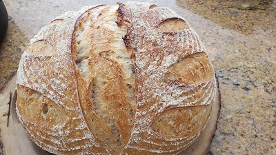

<div *screenBelowLarge class="title-bar-small">
  <span class="fas fa-bars"
    (click)="menuService.toggleLeftSideMenu()">
  </span>
  <div class="small-image-holder">
      
  </div>
  <span class="fas fa-ellipsis-v"></span>
</div>

<div *screenLarge class="title-bar user-title-bar">
  
  <div class="menu-area">
    <base-menu *ngIf="!menuService.isVertical"></base-menu>
  </div>
</div>